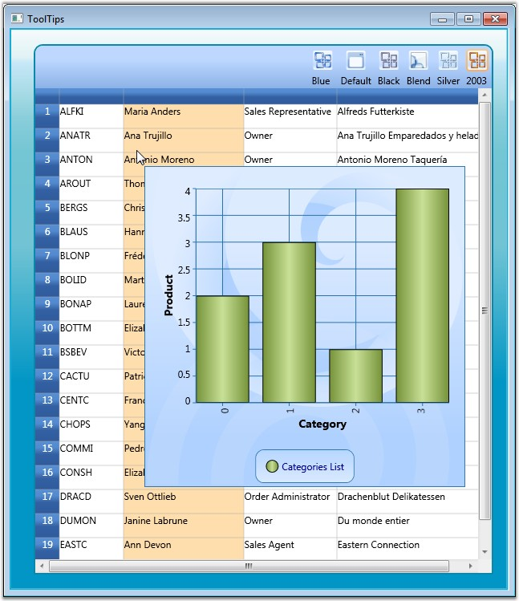

Essential Grid provides support to associate individual cells with ToolTips. ToolTip is a small pop-up box that appears when you move the mouse over a visual element. It is used to display additional information about the elements without increasing the window size. They are mainly used to display some text data. You can also place any style content such as a group of lines of text, an image, or any control into the tooltip host.
Grid exposes a style property named TooltipTemplateKey, which will be the name of the template to be used for generating tooltip. You can define this template in xaml and then simply assign its name to the style.TooltipTemplateKey property. This infers that any style content, that is defined in this template, could be used to display the tooltip. Once the template is defined, you need to enable its display by setting the style.ShowTooltip property to true.
 Note: If style.ShowToolip is not set, then the
default template associated with the Grid will be loaded, and the default
template would try to show the style.CellValue in a tooltip.
Note: If style.ShowToolip is not set, then the
default template associated with the Grid will be loaded, and the default
template would try to show the style.CellValue in a tooltip.
Example
The below example displays a Chart control in the tooltip host. The grid is bound to the Customers table in which the second column is assigned with a tooltip template that holds a data bound chart for tooltip display. Follow the steps below:
1. Define a Template for ToolTip as shown in the following code:
|
[XAML]
<DataTemplate x:Key="chartTemplate"> <syncfusion:Chart Grid.Row="1" Name="Chart1" Height="400" Width="400" syncfusion:SkinStorage.VisualStyle="Office2007Blue">
<!--Chart Legend declaration--> <syncfusion:Chart.Legends> <syncfusion:ChartLegend syncfusion:ChartDockPanel.Dock="Bottom"/> </syncfusion:Chart.Legends>
<!--Chart area to present chart segments.--> <syncfusion:ChartArea FontWeight="Bold" FontSize="14" >
<!--X-axis declaration with required property settings.--> <syncfusion:ChartArea.PrimaryAxis >
<!--Assigning text for the labels in the Primary Axis with the Product name.--> <syncfusion:ChartAxis Header="Category" PositionPath="CategoryID" ContentPath="CategoryName" RangePadding="None" LabelRotateAngle="270" LabelsSource="{Binding ItemsSource.Categories}"/> </syncfusion:ChartArea.PrimaryAxis>
<!--Y-axis declaration with required property settings.--> <syncfusion:ChartArea.SecondaryAxis> <syncfusion:ChartAxis Header="Product" RangePadding="None" /> </syncfusion:ChartArea.SecondaryAxis>
<!-- Binding data to the series from the database.--> <syncfusion:ChartSeries Type="Column" Label="Categories List" BindingPathsY="Count" Interior="{StaticResource SeriesBInterior}" DataSource="{Binding ItemsSource}" /> </syncfusion:ChartArea> </syncfusion:Chart> </DataTemplate> |
2. Associating the above template with the Grid Cell as shown in the following code:
|
[C#]
var style = model[1, 2];
// Enable tooltip. style.ShowTooltip = true;
style.CellValue = customer.ContactName; var cust = customer.Orders.Select(o => o.OrderDetails.Select(od => od.Products).Select(p => p.Categories)).ToList(); var finalList = cust.Select(c => new { Count = c.Count(), Categories = c }).ToList(); style.ItemsSource = finalList;
// Assign template. style.TooltipTemplateKey = "chartTemplate"; |
Here is a sample screen shot.

Figure 193: ToolTip Template associated with the Grid Cell
Note: For the complete code, refer to the
following browser sample.
...\My Documents\Syncfusion\EssentialStudio\<Version Number>\WPF\Grid.WPF\Samples\3.5\WindowsSamples\Product Showcase\Tooltips Demo.